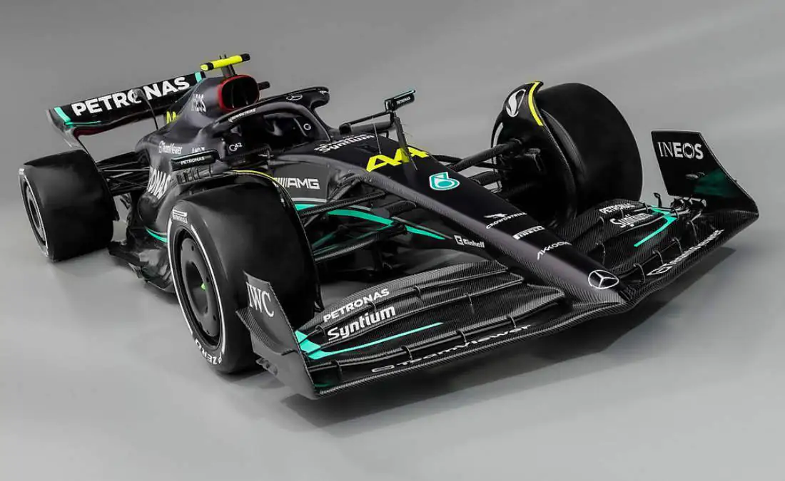
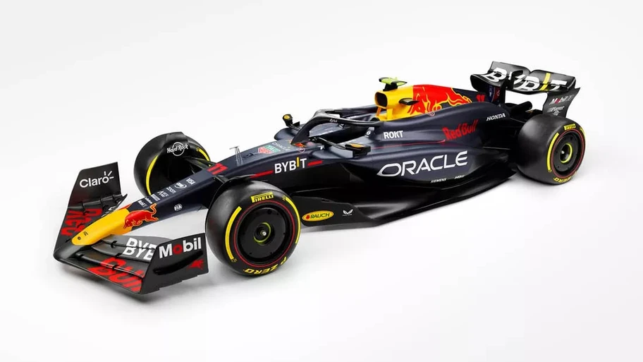

Mercedes AMG F1
Es oficial, el equipo Mercedes-AMG Petronas de la Fórmula 1, reveló el vehículo que los acompañará en esta temporada. Se trata del Mercedes-AMG F1 W14 E Performance, desarrollado sobre la base del modelo anterior, que llevaba por nombre W13; la nueva apuesta enmarca rendimiento y estetica.

Haas-Ferrari VF24
Aparte de una nueva decoración en color negro, Haas parece haber tomado nota de algunos elementos de sus rivales para pulir su monoplaza, que es una evolución de lo que venían haciendo el año pasado. Ahora trabajaron en el diseño de los pods laterales, al adoptar el estilo downwash. También tiene las puntas del alerón trasero (de doble plano) "desprendidas", una cubierta de motor más ancha y algo que tomaron de Mercedes.